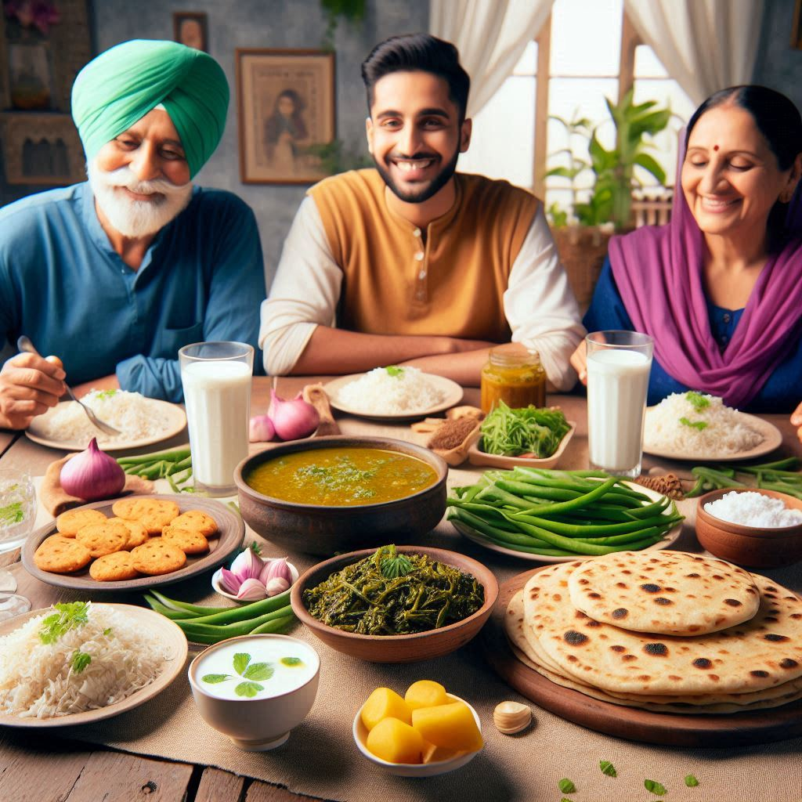
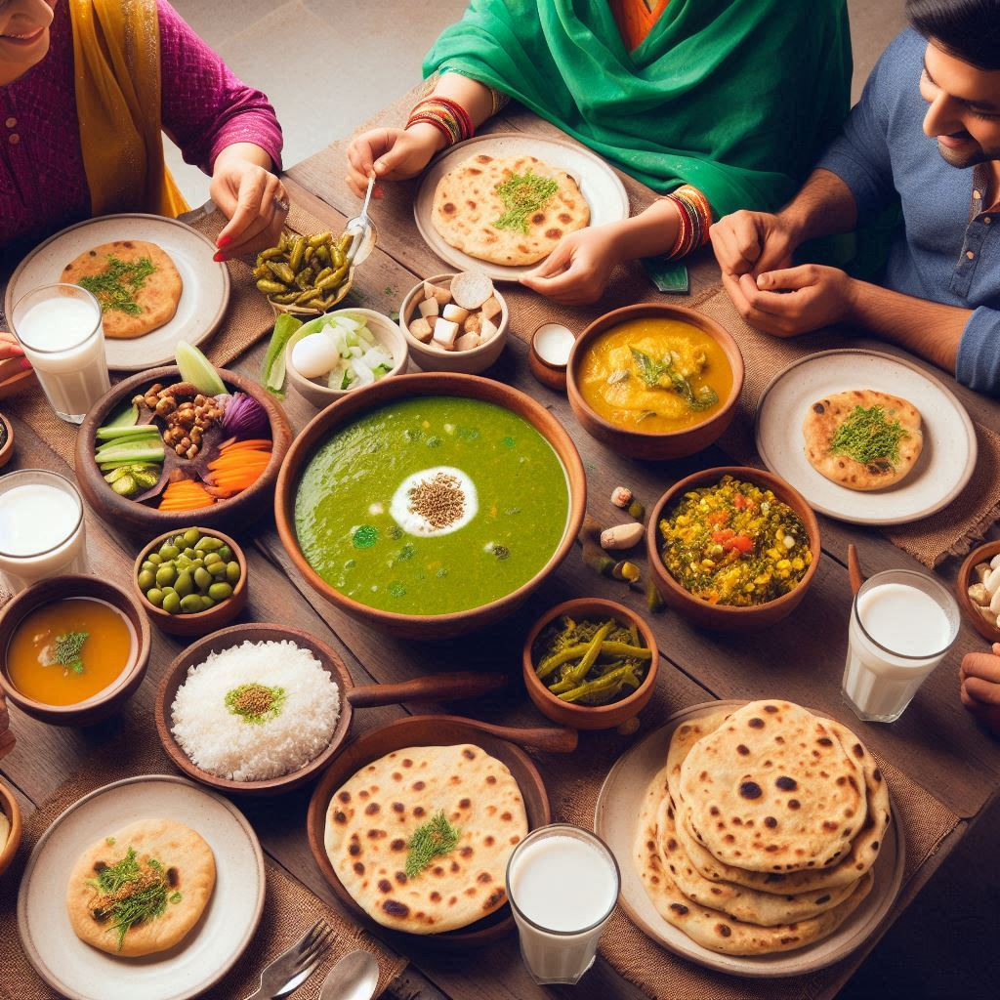

Haryana’s food culture reflects its agricultural roots and strong connection to farming traditions. Known for its simple yet flavorful dishes, Haryana’s cuisine is primarily based on wheat, rice, dairy products, and vegetables. The food is wholesome, rich in flavor, and often incorporates a variety of spices and herbs. Here's an overview of the typical food and culinary specialties of Haryana:
1. Popular Dishes
- Bajra Khichdi: A nutritious dish made with bajra (pearl millet), rice, and lentils. It's a wholesome, comforting meal, especially popular during the winter months.
- Chaas: A refreshing drink made from buttermilk, widely consumed in Haryana, particularly to aid digestion and keep cool during hot summers.
- Kadhi Pakora: This traditional dish consists of gram flour fritters (pakoras) soaked in a sour, spicy yogurt-based curry (kadhi). It’s typically served with rice.
- Aloo Tikki: A popular snack made from mashed potatoes, spices, and herbs, which are formed into patties and fried until golden and crispy. It is usually served with tamarind chutney.
- Makke di Roti: A flatbread made from cornmeal, often paired with sarson da saag (mustard greens), a typical winter dish.
- Sahjan ki Sabzi: A curry made from the drumstick plant (known as Sahjan), cooked with tomatoes, onions, and various spices.
- Pinni: A winter delicacy made from wheat flour, ghee, and sugar, often prepared during festivals or special occasions.
- Kachri ki Sabzi: Kachri (wild cucumber) is used to prepare a tangy and spicy curry, a staple in rural households.
- Lassi: Made from thick yogurt, served sweetened or salted, often in a traditional matka (clay pot).
- Gajar Methi ki Subzi: A flavorful dish made from carrots and fenugreek leaves, cooked with spices like turmeric and cumin.
2. Dairy Products
Dairy is an integral part of Haryana’s food culture. Some popular dairy products include:
- Paneer: Fresh Indian cheese, used in dishes like paneer curry and stuffed parathas.
- Desi Ghee: Clarified butter used in cooking, for frying or tempering spices.
- Milk: Fresh cow's milk is widely consumed, and used in desserts like kheer (rice pudding).
3. Sweets
- Ghevar: A dessert made with flour, ghee, and sugar syrup, popular during festivals.
- Lassi with Malai: A thick, rich lassi topped with a layer of cream (malai).
- Seviyan: Made from vermicelli cooked with ghee, sugar, and cardamom.


4. Bread and Parathas
- Missi Roti: Made with gram flour, wheat flour, and spices.
- Tandoori Roti: Cooked in a tandoor (clay oven).
- Paratha: Stuffed parathas, such as aloo paratha and gobhi paratha.
5. Spices and Flavors
Haryana's cuisine uses a variety of spices:
- Cumin, coriander, turmeric, garam masala, mustard seeds for tempering.
- Green chilies and ginger for flavor.
- Ajwain (carom seeds) and asafoetida (hing) for fragrance.
6. Regional Specialties
- Jaat ki Kadhi: A variation of traditional kadhi.
- Samosa: Spiced potato and pea-filled snack.
Conclusion
Haryana’s food reflects a rich agricultural tradition, emphasizing fresh ingredients like wheat, rice, vegetables, and dairy. The cuisine is simple, nutritious, and robust, offering a flavorful experience.